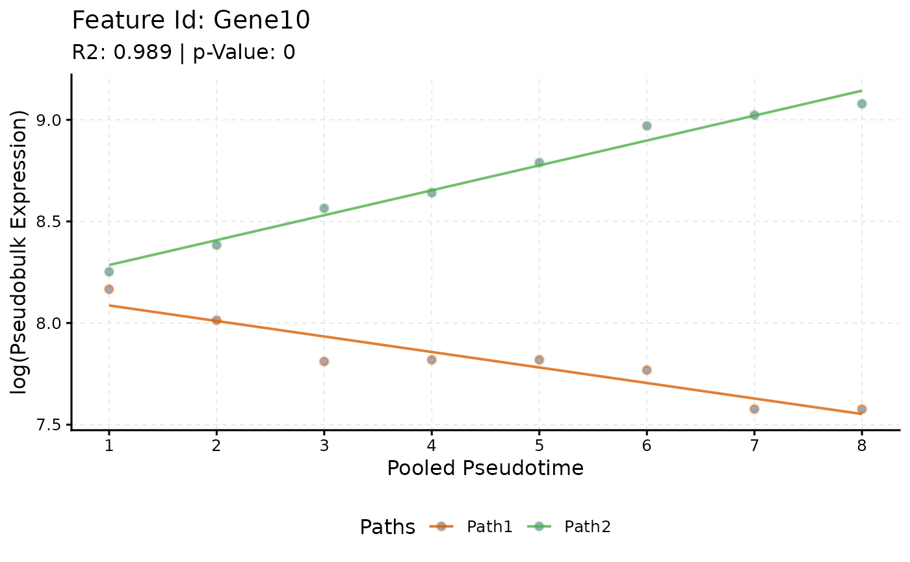

plotTrend() plots the pseudo-bulk counts of a gene along the binned
pseudotime of each path, with the curves of its selected model
(sc.t.fit()).
Usage
plotTrend(
scmpObj,
feature_id,
xlab = "Pooled Pseudotime",
ylab = "Pseudobulk Expression",
smoothness = 0.01,
logs = NULL,
logType = "log",
pseudoCount = 1,
significant = TRUE,
summary_mode = "median",
curves = TRUE,
lines = FALSE,
points = TRUE
)Arguments
- scmpObj
A ScMaSigPro object.
- feature_id
The name of a gene.
- xlab
The label of the x axis.
- ylab
The label of the y axis; with logged points it becomes, for example,
log(ylab).- smoothness
The step of the pseudotime grid of the curves: the smaller, the smoother.
- logs
Whether to log the points: the counts of the bins, divided, for log-link fits, by the size factors stored in the design. The fitted curve is the polynomial of the selected model on the scale of the link: the log of the mean under the log link, the mean itself under the identity link. The default,
NULL, logs the points when the fits used the log link and draws them as they are otherwise, so that points and curve are on the same scale.- logType
The log of the points:
"log","log2"or"log10".- pseudoCount
The number added to the points before the log.
- significant
Whether the gene must be in a gene list of
sc.filter().- summary_mode
How the points of each binned pseudotime and path are summarised for the lines:
"median"or"mean".- curves
Whether to draw the fitted curves.
- lines
Whether to draw lines through the points.
- points
Whether to draw the points.
See also
Other plots:
plotBinTile(),
plotDiagnostics(),
plotIntersect(),
plotTrendCluster()
Author
Priyansh Srivastava spriyansh29@gmail.com
Examples
data("scmp.ob", package = "scMaSigPro")
plotTrend(scmp.ob, "Gene10")
